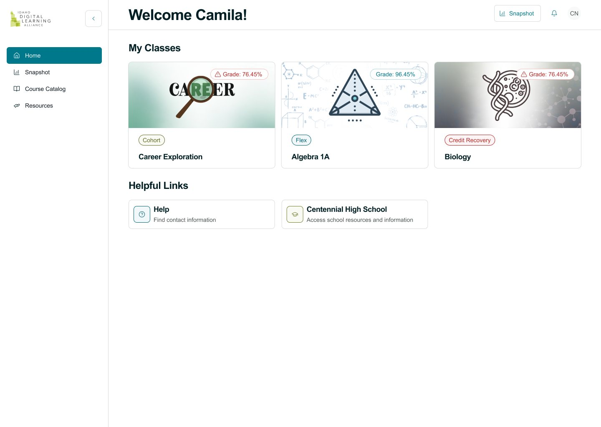

Quick read
IDLA
Twelve roles should not mean twelve products.
Idaho Digital Learning Alliance is the state's supplemental online provider: a student stays enrolled at their own school and takes an IDLA course alongside their timetable. The engagement was three portals, not one, and between them twelve role views — student, parent, teacher, site coordinator, and the administrators responsible for all of them.
The project in 60 seconds
Twelve different jobs did not need twelve separate products.
Start here for the challenge and the thinking behind my work. Explore the deeper process and actual project evidence below.
01 / The problem
Three portals served twelve role views with different responsibilities, creating a risk of inconsistent navigation and repeated learning.
02 / Designed for
Students, parents, teachers, site coordinators, and account or professional-development administrators.
03 / My role
UI/UX designer defining responsive, role-aware portal experiences and the shared interface structure.
How evidence became a design decision
What I examined
Mapped the service and requirements across three portals, six role sets, and their different tasks and states.
What I learned
The experience needed a recognizable foundation, but what mattered first was different for every role.
What I changed
Create a shared navigation and catalog structure, then reveal role-specific capabilities, dashboards, and empty states.
What resulted
Design work covered three portals, twelve role views, and 365 screens. No verified adoption or performance metrics are available.
Why this decision?Reuse makes the system easier to learn and maintain without hiding the tasks that make each role distinct.

Keep scrolling to examine the full design and supporting artifacts.
Professional project · design outputs, no verified user-impact metric.
Ssituation01the service
A statewide school that nobody attends in person.
Idaho Digital Learning Alliance is not a district and not a course vendor. The Idaho Legislature set it up in 2001 as the state's supplemental online provider: a student stays enrolled at their own school and takes an IDLA course alongside their timetable.
That exists because of geography. A high school of two hundred students in a rural county cannot staff AP Calculus, a third language and a career-technical sequence. IDLA is how that student gets the course anyway. In 2022–23 that came to 44,342 course enrollments, taught by Idaho-certified teachers.
Ssituation02the shape
Three portals. Twelve people who are not the same person.
The engagement was not one portal. It was three — the Student and Professional Development portal, POST and CNP — each with its own login and registration, and between them twelve role views.
A student wants to know what is due. A parent wants to know their child is actually enrolled. A teacher is across many students at once. A site coordinator registers them on the school's behalf. An administrator is responsible for all of it and for the people doing it.
Twelve jobs is twelve chances to build twelve products by accident. The work was to stop that happening.
Ttask03the brief
Twelve role views, one product.
My task was to design the portals across all twelve role views, responsive from desktop down to tablet, without letting twelve jobs turn into twelve products.
That meant deciding early what every role shares, and treating everything else as something added on top rather than a separate build.
Aaction04one spine
One catalog, rendered twelve ways.
Every role gets the same spine: a side nav, a header, a home, a dashboard, a resources page, and a course catalog. The catalog itself carries its own set — grid, list, search, filters and the course card — and those are the same components wherever they appear.
What changes is what sits on top. Students and parents get a snapshot. Teachers and site coordinators get onboarding, My Enrollments and the payment branch for courses that cost money. Administrators get a management layer nobody else sees.
That is the decision the whole system rests on: the difference between roles is additive, never a fork. One catalog, one card, one set of states.
It is a cognitive-load argument before it is a consistency one. A site coordinator who has learned the catalog as a teacher should not have to learn it again in another role; twelve variants would spend a learner's attention on the interface instead of the course. Extraneous load is the load you can design away, and a single schema is how you do it.
Aaction05the student view
What a student sees first.
A student’s home leads with My Classes. Each card carries its type — Cohort, Flex or Credit Recovery — and the current grade, with a warning mark when a grade needs attention. Helpful links to IDLA support and their own school sit underneath.
The side nav holds four places — Home, Snapshot, Course Catalog and Resources — on the same spine every other role uses.
Aaction06the snapshot
One page that answers “how am I doing?”
Snapshot is a single page per course. It shows how many weeks are left between the start and end date, the current grade, and how much the missing work could raise it.
Below that: hours of activity by day, every assignment marked missing, upcoming or completed with what it is worth, the teacher, coordinator and principal to contact, and the days left until a proctored final exam.
Aaction07the course catalog
Finding the next class.
The catalog students browse is built from the same components as every other role’s catalog. Search leads, then filters for session, model, type, grade level and subject, an alphabetical sort, and a grid or list toggle.
Each course card shows its model and type as tags — Cohort, Standard — and the sessions it runs in, so a student can rule a course in or out without opening it.
Aaction08the parent view
Two children, two schools, one home.
A parent sees every child they are connected to on one screen: Camila’s classes, then Patrick’s, each with the same cards and grades the students see, and links to both of their schools underneath.
Nothing new to learn: it is the student home, repeated per child.
Aaction09empty states
The screens that decide whether anyone ever starts.
A parent who logs in before their child is connected sees nothing. So does a parent whose children have not registered yet — and those are two different problems that look identical if you only draw one empty state. The file carries both, separately.
A teacher with no classes connected is the same situation from the other side. Each of these is somebody's first minute in the product, and the first minute is the one that decides whether there is a second.
Aaction10learning design
Designing for people who are there to learn something.
An education platform is not a generic SaaS product with courses in it. The interface is overhead on top of the actual work, which is learning, so every control that has to be figured out is attention taken away from the subject.
That shapes three things here. Consistency across roles, so the schema is learned once. Onboarding for the roles that administer other people rather than only themselves — teachers and site coordinators get it, students do not, because a student's first task is simpler. And empty states written as the first instruction rather than an apology: a parent with no student connected is not looking at an error, they are looking at step one.
Working backwards from what the person has to accomplish, rather than forwards from the screens available, is the same discipline as backward design in curriculum — outcome first, then the path to it.
Aaction11the student admin
Approving people from the list.
The Student Admin manages accounts. Manage Users opens on counts — total, pending, approved, students and approvers — then a single table filtered by status and role, where each role is a tag.
Every pending row carries Approve User inline, so the queue gets cleared from the list instead of one profile at a time. Approved rows switch to edit and account actions, and the whole list exports.
Aaction12the pd admin
Running the professional development catalog.
The PD Admin manages what teachers can enrol in. Manage Resources lists every course with its format, seats taken, hours and last change, filtered the same way as the catalog people browse.
Creating a course is a five-step side sheet that opens over the list. It starts with the basics — image, name, description, a video link and a more-information URL — and can be saved as a draft at any step.
Rresult13scale
The size of it.
Student & PD, POST and CNP — each with its own login and registration, each sharing one interface spine.
Six roles in the Student & PD portal, three each in POST and CNP. Same product, twelve different jobs.
Screen-size frames across the six role sets I counted in the file. Teacher alone carries 137.
Screen-size frames counted per role set in the design file:
- Teacher 137
- PD Admin 92
- Site Coordinator 59
- POST · End User 30
- Students 24
- Parents 23
Rresult14where it stands
Where it stands, and what I cannot tell you.
What I can show. Three portals and twelve role views on one spine, 365 screen-size frames across the six role sets I counted, and two admin roles that run accounts and courses. Those are structural facts, read out of the design file.
What I cannot. No adoption numbers, no support-ticket change, no task completion. The 44,342 enrollments above is IDLA's own published figure for the service, not a result of this work. I would rather leave the space empty than fill it with something I did not measure.
What I would measure. Time from a site coordinator's first login to a student registered. The share of parents who reach a connected student rather than stalling on an empty home.
The part that worries me. A spine shared by twelve roles is only a saving if each role still gets what it actually needs. The risk in additive design is that the sixth role inherits a layout built for the first. I would want to watch a site coordinator and a PD admin work before claiming the pattern holds at the far end.